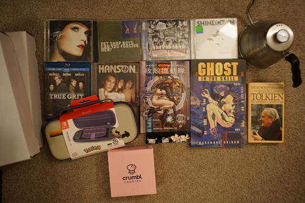

I went to refill my kakuno and... it has a crack in the grip section?! I think fountain pens may just be too weak for me. My strength is just too limitless! Maybe my next one will have to be metal or will I just break that too? Pray for my Safari...
I've been listening to a few of my old CDs that I hadn't ripped yet. I was really surprised to only know the two singles off Shinedown's Leave a Whisper. I was even more surprised that I could half-sing all of A Change of Pace's An Offer You Can't Refuse! I guess that clears up what I was listening to as a teen.
Ryan bought me one. They are badly needed in our lives right now.
This is honestly really goofy and not very "good".
The remixes on this single aren't nearly as good as the original!
it was unopened (before I opened it). time to find out if the neocities babies have bad taste or ....??? It's gag music, but it's pretty good.
Completed my 3 CD collection of music I would know from them.
Lord knows I didn't need this but I bought it anyway
Ryan told me there were cowboys in this so I bought it for him.
Today I learned that they censored a lesbian sex scene in this.
Ryan's
Ryan's sister bought one for him and I got to enjoy the dystopia of a soulless cookie store. It was really off-putting!!
needed Walking on Broken Glass very badly
I think Ryan gave this to his mom already
An fake boyband created by MTV. Give this one a listen! The CD would be improved with the removal of the sound effects.
Ryan's
Ryan's
Ryan's
Ryan's
Ryan's
I have finally replaced my bootleg K-on phone case with bootleg merch from a show I haven't seen
Ryan's
Ryan's
I am now aware this is degenate music.
Ryan's
Ryan's
so embarassing but that's what stickers are for right?
I was dreaming of what I wanted to sew for Hina again but decided it was time to make Grassy a new outfit. He's been stuck in his sundress for like 10 years or something so it's REALLY time.
My plans were to make a sailor outfit with shorts for my bunny son. I almost hit all the marks! My original design would have looked much better on a SD10 boy which... wow I wish Grassy had been an SD10 boy!!!!

I put Kinokoeye in him for funsies. They probably won't stay in but they're fun! I'm trying to decide what kind of headwear I want for him. A beret maybe? I finally ordered magnets for his bunny ears but he needs more than just ears!

I got an AC order in and installed silicone discs in all my large dolls. We are tricked out here!! How many poses can we pose?? All three of them! Liam and Verona got new wigs and had to sit naked in my kitchen while I trimmed them. One of the wigs is literally the worst wig I own but I think I made it look less vomit.

I really do like this wig though after chopping it. It makes me want to put 7 earrings in Liam's ears (canon). Verona will have 2 when I find the right objects to glue to him. He's only a little spicy.

I wanted to get Verona a wig in his natural color. When I get a WS Louis head (never?) this will be a wig for that head. Adult Verona can wear it for now!